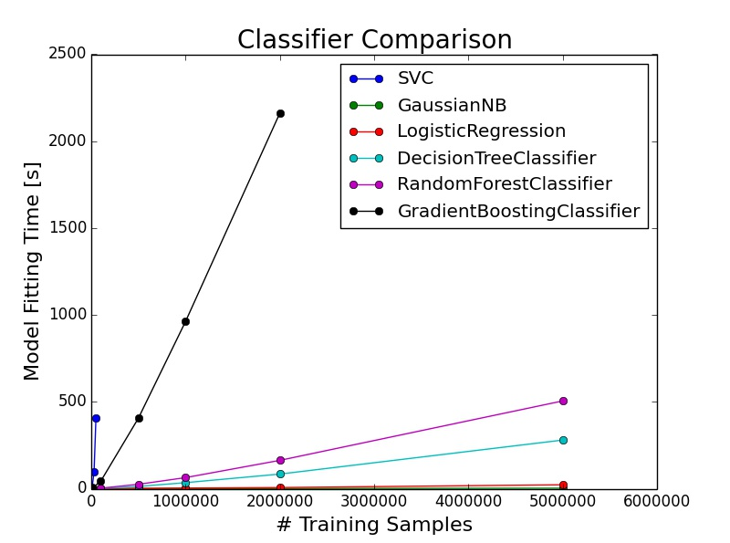

Kaggle Competition: Avazu Click-Through Rate Prediction
by Yuri M. Brovman, PhD
|
Data/Code: Here is the link to the actual Avazu Kaggle competition with all of the data and information. My code for my solution is on GitHub. Analysis: Here is a basic explanation of my code and analysis. I used Python with the scikit-learn library to perform most of the calculations. Figure 1. In order to understand which classifier to utilize for my predictions, it is important to understand computational limitations. This graph shows the model fitting time for several classifiers that I used, plotted as a function of the number of training examples. My machine has an Intel Core i7-2600K 3.4GHz CPU and 8GB RAM. Both the logistic regression and the Gaussian Naive Bayes classifiers were very fast, performing under 3 seconds for 5 million training examples. The support vector machine classifier (SVC) did not scale very well and I stopped testing after only 200,000 training examples. Figure 2. The cross validation set logloss error is presented here for several classifiers. I used 2 million training examples with a train / cross validation set split of 90% / 10%, respectively. Clearly the logistic regression as well as the gradient boosting classifiers produced superior results. 
|